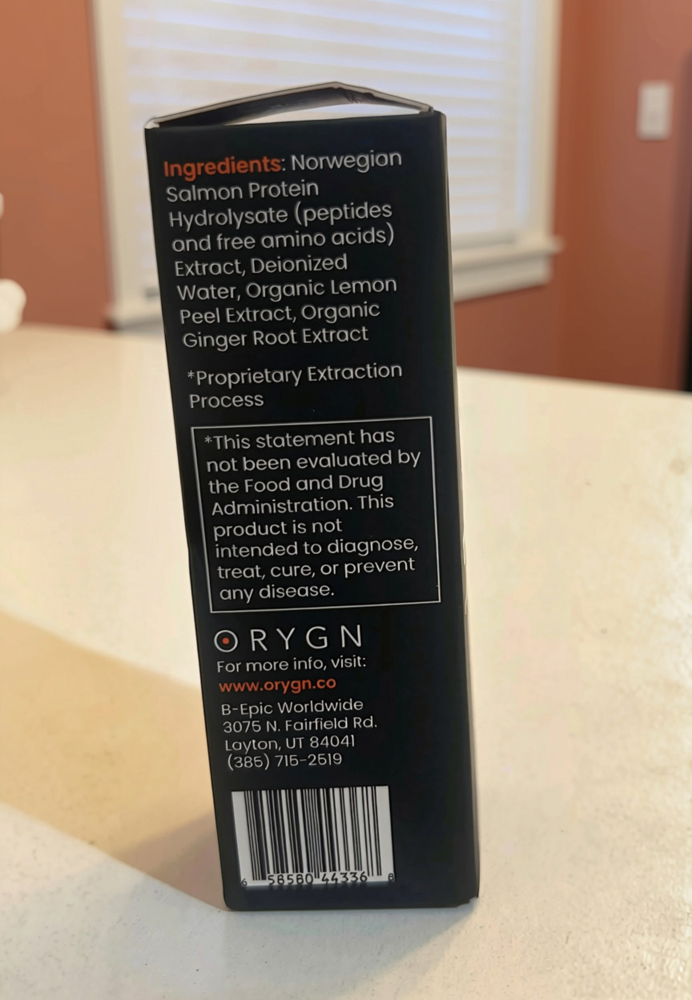

Na czym polega przełom triGLP?
triGLP to zaawansowana formuła bioaktywnych peptydów morskich pozyskiwanych z czystego łososia norweskiego (Salmo salar). Nazwa preparatu odnosi się do jego unikalnej zdolności do jednoczesnej aktywacji trzech szlaków hormonalno-jelitowych: GLP-1, GLP-2 oraz GIP.

W przeciwieństwie do monoagonistów, triGLP działa wielotorowo na cały układ metaboliczny. Proces enzymatycznej hydrolizy rozbija białka na ultramałe sekwencje dipeptydowe i tripeptydowe o niskiej masie cząsteczkowej (< 1000 Da).
Pozwala to na ich błyskawiczny transport przez śluzówkę jamy ustnej prosto do krwiobiegu, omijając trawienie w żołądku oraz metabolizm wątrobowy.
Potrójna aktywacja: GLP-1, GLP-2 oraz GIP
Formuła łączy trzy naturalne peptydy jelitowe, które regulują apetyt, metabolizm glukozy oraz regenerację nabłonka.
GLP-1
Glukagonopodobny peptyd-1Odpowiada za kontrolę ośrodka głodu w mózgu oraz spowolnienie opróżniania żołądka.
- Wywołuje uczucie sytości po mniejszych posiłkach
- Zmniejsza zachcianki na słodycze i podjadanie
- Wspomaga stymulację wydzielania insuliny zależnej od glukozy
- Chroni przed gwałtownymi skokami cukru we krwi
GLP-2
Glukagonopodobny peptyd-2Kluczowy czynnik regeneracyjny ukierunkowany na układ pokarmowy i barierę jelitową.
- Wspiera odbudowę i integralność kosmków jelitowych
- Uszczelnia barierę jelitową i ogranicza stany zapalne
- Optymalizuje wchłanianie mikro- i makroelementów
- Łagodzi dolegliwości ze strony przewodu pokarmowego
GIP
Polipeptyd insulinotropowyGłówny regulator gospodarki energetycznej i magazynowania tłuszczu.
- Działa w pełnej synergii z GLP-1 dla lepszej kontroli metabolizmu
- Wspiera efektywne wykorzystanie glukozy przez komórki
- Wspomaga procesy lipolizy (rozpadu tkanki tłuszczowej)
- Chroni tkankę mięśniową w trakcie redukcji wagi
Dlaczego wchłanianie podjęzykowe jest tak skuteczne?
Tradycyjne kapsułki i tabletki ulegają trawieniu w żołądku. Kwas solny oraz enzymy rozkładają peptydy, przez co tracą one swoje właściwości sygnałowe (GLP-1, GLP-2 i GIP). Podanie podjęzykowe chroni je przed degradacją.
Zalety kropli podjęzykowych
-
Wchłanianie od razu w ustach: peptydy trafiają przez błonę śluzową jamy ustnej prosto do krwiobiegu.
-
Ominięcie żołądka i wątroby: zapobiega osłabieniu działania składników aktywnych.
-
Szybkie i proste stosowanie: wystarczy przytrzymać krople pod językiem przez około minutę.
triGLP a syntetyczni agoniści GLP-1 w zastrzykach
Poniższa tabela porównuje naturalne bioaktywne peptydy morskie z lekową terapią w zastrzykach.
| Cecha | triGLP | Zastrzyki GLP-1 |
|---|---|---|
| Mechanizm | Potrójna aktywacja (GLP-1 + GLP-2 + GIP) | Monoterapia (tylko syntetyczny GLP-1 lub GLP-1/GIP) |
| Pochodzenie surowca | 100% bioaktywne peptydy z łososia norweskiego | Synteza chemiczna |
| Forma aplikacji | Krople pod język | Zastrzyki podskórne |
| Regeneracja jelit | Tak (dzięki obfitości frakcji GLP-2) | Nie (brak wsparcia bariery jelitowej) |
| Skutki uboczne | Brak uciążliwych mdłości i wymiotów | Częste nudności, zaparcia, refluks |
| Recepta | Nie (suplement diety GMP) | Wymagana |
Pełny skład preparatu

triGLP powstaje w procesie zimnej hydrolizy enzymatycznej, z zachowaniem najwyższych standardów ekologicznych.
W skład wchodzą:
-
 Hydrolizat białka norweskiego łososia atlantyckiego
Hydrolizat białka norweskiego łososia atlantyckiego
-
 Woda dejonizowana
Woda dejonizowana
- Organiczny ekstrakt ze skórki cytryny
- Organiczny ekstrakt z korzenia imbiru
Badania naukowe
Działanie bioaktywnych peptydów z łososia atlantyckiego potwierdzają badania laboratoryjne.
W publikacji z 2024 roku na łamach międzynarodowego czasopisma „Marine Drugs” przedstawiono badania nad rozpuszczalnym hydrolizatem białka łososia (SPH) oraz jego wyizolowanymi frakcjami peptydowymi, które wykazały ich bezpośrednią aktywność wobec receptorów GLP-1 oraz GIP.
Uwaga: badanie wykonano w warunkach laboratoryjnych (in vitro) na samym składniku, a nie na gotowym produkcie ORYGN triGLP.
Jak stosować?

Jedna butelka triGLP zawiera 9 ml preparatu, co wystarcza na około 36 porcji po 0,25 ml.
Przed użyciem delikatnie wstrząśnij butelką. Odmierz 0,25 ml preparatu, umieść krople pod językiem i przytrzymaj przez około minutę, a następnie połknij. Precyzyjna podziałka na kroplomierzu (0,25 ml oraz 0,50 ml) ułatwia dokładne odmierzenie dawki.
Zalecane stosowanie to 0,25 ml (1–2 razy dziennie). Nie należy przekraczać zalecanej porcji do spożycia w ciągu dnia.
Ważne:
Pamiętaj, aby nie przekraczać zalecanej dziennej porcji. W razie ciąży, karmienia piersią czy przyjmowania innych leków, przed zastosowaniem preparatu skonsultuj się z lekarzem. Przechowuj w suchym, chłodnym i zacienionym miejscu, z dala od słońca oraz niedostępnym dla dzieci.
Najczęściej zadawane pytania
Na ile starcza jedno opakowanie triGLP?
Jedna butelka wystarcza na około 18–36 dni, w zależności od dziennego dawkowania.
Czym różni się triGLP od znanych zastrzyków jak Ozempic czy Mounjaro?
Główna różnica to pochodzenie i sposób działania. Zastrzyki zawierają syntetyczne leki, które silnie wymuszają reakcję organizmu, co często skutkuje nudnościami, zaparciami i złym samopoczuciem. triGLP to naturalny preparat w postaci kropli podjęzykowych oparty na peptydach z łososia norweskiego. Zamiast ingerować w gospodarkę hormonalną, delikatnie stymuluje własne ścieżki jelitowe(GLP-1, GLP-2 i GIP). Dzięki temu pomaga opanować apetyt i wspiera regenerację jelit bez uciążliwych skutków ubocznych.
Czy te krople mają rybi smak lub zapach?
Nie, absolutnie. Choć surowcem są bioaktywne peptydy z norweskiego łososia, proces oczyszczania i hydrolizy usuwa rybi zapach i posmak. Formuła została wzbogacona o ekstrakty z organicznej skórki cytryny i korzenia imbiru, dzięki czemu krople mają delikatny, orzeźwiający, lekko cytrusowy smak.
Mam alergię na ryby – czy mogę bezpiecznie stosować triGLP?
W procesie mikrohydrolizy białka łososia zostają rozbite na bardzo małe sekwencje dipeptydowe i tripeptydowe (poniżej 1000 Da), co drastycznie obniża ich potencjał alergizujący. Jeśli jednak masz silną, zdiagnozowaną alergię na białka ryb, dla własnego bezpieczeństwa skonsultuj się z lekarzem.